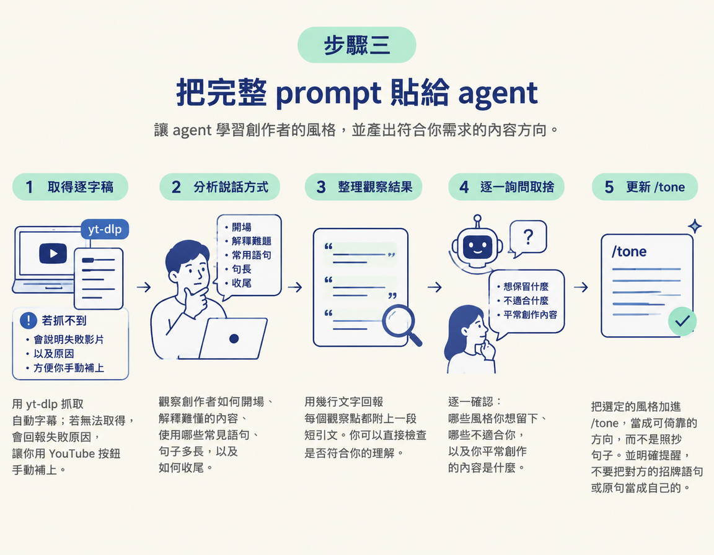
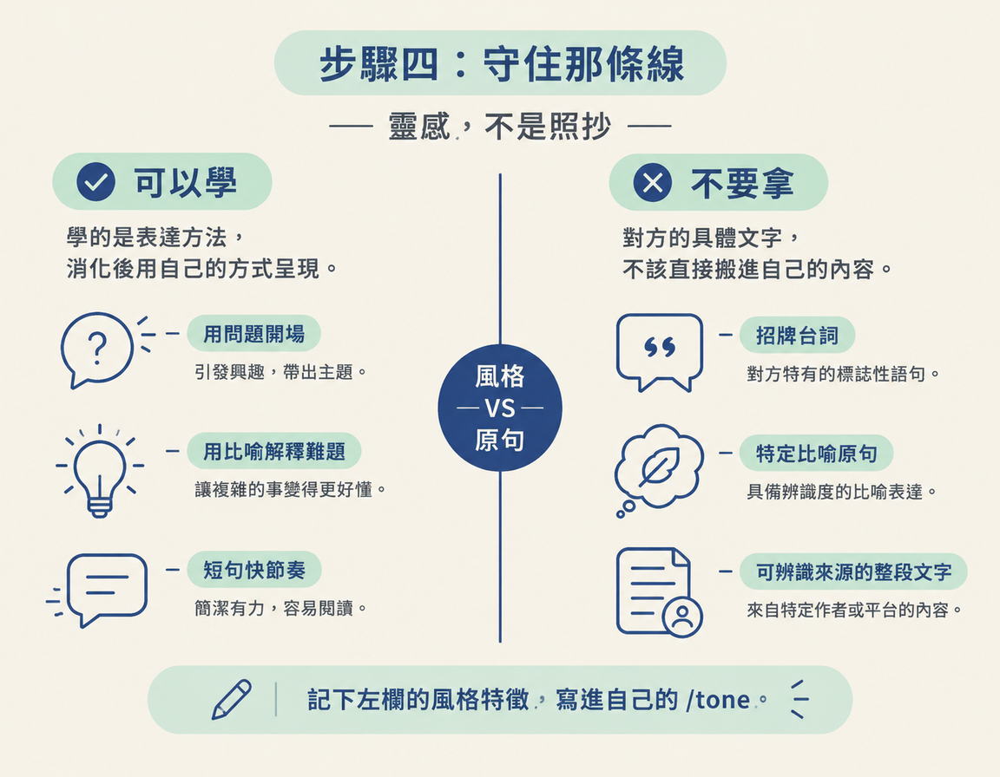

這一步接在你用手邊對話素材建立第一版 /tone 之後，目標是補上自己素材還不夠時缺少的風格線索。你需要準備一位（或兩位）欣賞的創作者、他們近期影片的逐字稿，以及上一節建立好的 /tone。做完後，會得到一份參考創作者風格、但仍要由你決定取捨的 /tone 初版。
上一節你把手邊的對話素材交給 agent，建出了第一版 /tone。但如果你平常不太多話，或是你和 agent 還沒累積多少對話，那份初版可能會很單薄。
這時可以先借一位你欣賞的創作者的語氣打底：讓 agent 閱讀他近期影片的逐字稿，整理出說話方式，再把你想採用的風格加進 /tone。重點是把它當成靈感，不是照抄。之後你還會繼續調整，慢慢磨出自己的聲音。
/tone。這一步要把新風格加進去，因此目標檔案需要先存在。先選一位創作者，並以他最近幾支影片為主。創作者的語氣可能隨時間改變，參考近期內容，才能更貼近他現在的表達方式。先挑三支左右即可。一次放太多影片，反而容易沖淡你要觀察的特徵。
你也可以混合兩位創作者的風格。比如說，你不想完全像某一個人，但喜歡 A 的節奏、也喜歡 B 的親切感，就可以各挑一些影片，一起交給 agent 參考。
最快的做法是在 YouTube 網頁上打開影片，點選下方的 Show transcript，複製逐字稿，再貼給 agent。課程提供的 prompt 也預留了這種做法：如果 agent 抓不到字幕，它會告訴你哪些影片失敗、原因是什麼，你再手動貼上逐字稿。
如果想讓 agent 自動處理，可以請它使用 yt-dlp。課程提到這個工具能自動抓取字幕，但沒有提供固定指令。以下是常見用法，實際執行時可以讓 agent 依照你的環境調整：
# 典型用法：只下載自動字幕，不下載影片本身 yt-dlp --write-auto-subs --skip-download <影片網址>
--write-auto-subs 用來抓取自動產生的字幕，--skip-download 則是略過影片下載，只取得文字。不同版本的 yt-dlp 可能使用不同旗標，執行前先請 agent 確認指令是否適用。
課程提供的 prompt 會帶 agent 走完整個流程：抓逐字稿、分析說話方式、把觀察結果交給你確認，再將你選定的風格加進 /tone。它一開始就說明，目標是「受對方啟發，再變成自己的風格」：
"""I like the content of [a creator I admire, for example Two Minute Papers, or two creators I'd like to mix]. Help me write in a tone inspired by theirs, then make it my own. 1. Find their channel and get the transcripts of [their last 3] videos. If you can run commands, use yt-dlp to download the auto subtitles. If you can't get a transcript, tell me plainly which ones failed and why, and I'll paste it from the Show transcript button on YouTube. 2. Study how they talk: how they open, how they explain hard things, the phrases they repeat, how long their sentences are, and how they close. 3. Show me what you found in a few lines, with a short quote for each point. 4. Ask me, one at a time, what I want to keep, what doesn't fit me, and what I make content about. 5. Add it to my /tone skill as a style to lean on, not lines to copy. Never use their catchphrases or sentences as mine."""
先把方括號中的內容換成自己的選擇，例如 [a creator I admire] 換成你欣賞的創作者，[their last 3] 則換成你要參考的影片數量。接著，看看 prompt 會如何帶你完成這幾件事：
/tone：prompt 要求把風格當成可以靠攏的方向，而不是可以照搬的句子，也明確提醒，不要把對方的招牌語句或原句當成自己的。
這一步最容易走偏，所以要特別留意：參考創作者的風格很適合用來起步，但不能永遠只靠模仿。隨著你創作的內容增加，你會希望讀者認出的是你的聲音，而不是某個創作者的翻版。
可以把「風格」和「原句」分開判斷：
| 可以學（風格） | 不要拿（句子） |
|---|---|
| 他習慣用問題開場 | 他每次開場都說的招牌台詞 |
| 他會用比喻解釋難懂的內容 | 他實際使用的特定比喻原句 |
| 他句子短、節奏快，常用驚嘆語氣 | 一整段能讓人認出來源的文字 |
左欄描述的是表達方法，你可以消化後用自己的方式呈現。右欄則是對方的具體文字，不該直接搬進自己的內容。你的 /tone 應該記下左欄這類風格特徵。

手邊素材不夠時，可以參考一位或兩位創作者近期影片的逐字稿，替自己的/tone打底。先挑三支左右的影片，再用 YouTube 的 Show transcript 按鈕或 yt-dlp 取得逐字稿。接著把 prompt 貼給 agent，讓它分析對方如何開場、解釋、安排句子和收尾，再逐一詢問你想保留什麼。最後只把你選定的風格加進/tone：學表達方法，不要照搬原句。
做完這一步，你會得到一份加入了參考風格的 /tone 初版。接下來要處理的是稿子裡殘留的 AI 味：即使有了 /tone，內容仍可能出現典型的 AI 用詞。下一步會用 humanizer 把這些地方逐一修掉。